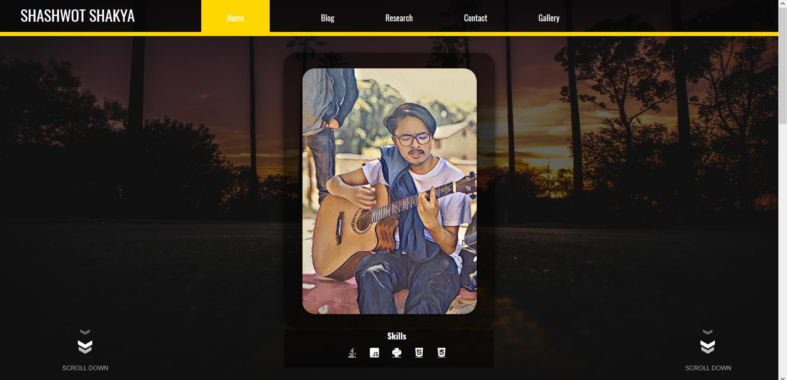
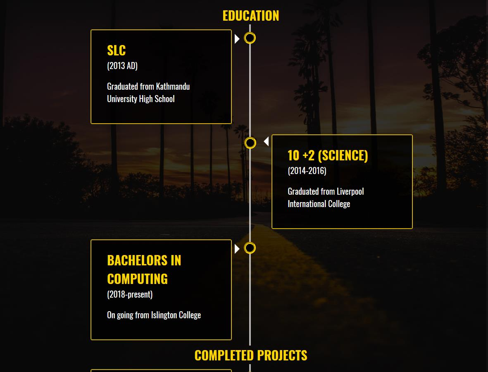
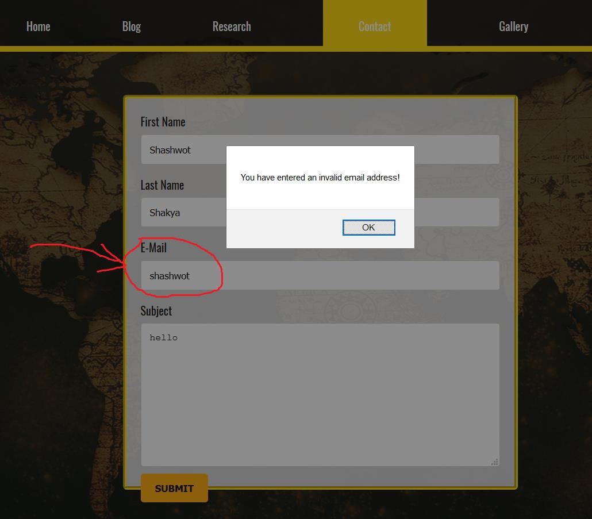

Internet has become a necessity in our lives. We use it every day through web browsers and websites. We are all familiar with the web so this project was very interesting to work on. Even a simple page takes a lot of effort to make it look decent. This project helped me understand the challenges and the efforts required to create a good webpage. The internet is an amazing platform where we can learn to do just about anything and grow in every field and walks of life. I also have learned a lot from the internet. For the assigned project, the main challenge for me was to create a good and interactive webpage. Everything I learned about web development from my school and college days were a big help as I did not need to start to learn from scratch. I had some idea about what I wanted to create. The first thing that I did was to search for some good interactive webpages and I saw what could be done.
This webpage was very interactive and very well designed. From this page, I got some ideas which I planned to implement in my own webpage. Like for example, I have also implemented the arrow on the bottom of my webpage similar to the one in this webpage. I took the inspiration and tried to create something similar which resulted in me creating the scroll down arrows.
This was another amazingly designed webpage which was very fascinating to me. From this website i had the idea of creating the timeline in my own page. This webpage was very interactive. The animations were great and it felt like a polished webpage. The timeline of the webpage is shown above. I tried creating something similar and it turned out ok.
This website was very helpful to me. It had everything needed to create a good interactive webpage. This website has helped me a lot. I learned many things from this webpage. And I found most of the answer to the problems I was facing in this website. I learned many things like taking icons from Font Awesome 5 and implementing them in my webpage, hover effects, adding transitions, border shading, etc.
From this website I got the idea of inserting an avatar and my social media information. The design of the website was good.
This was also a very helpful website. I learned everything about JavaScript and JQuery through this site. It helped me to create the form verification and the animated arrows in the website.
